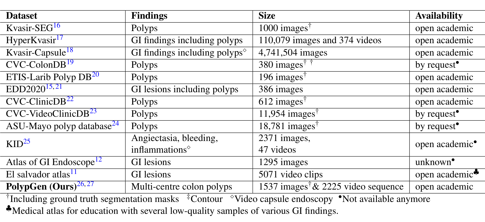
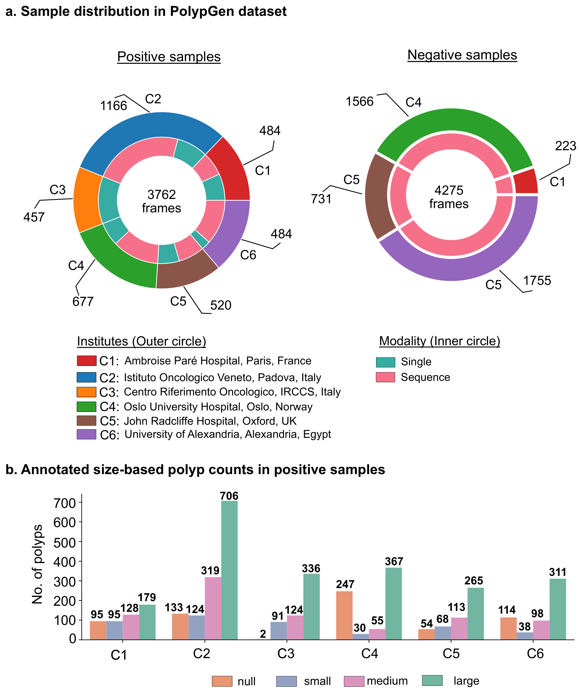
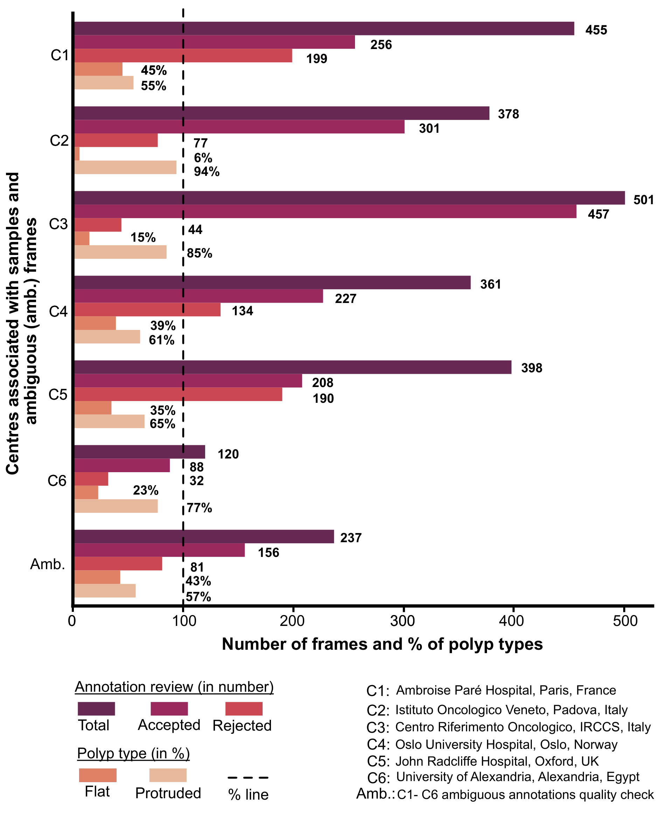
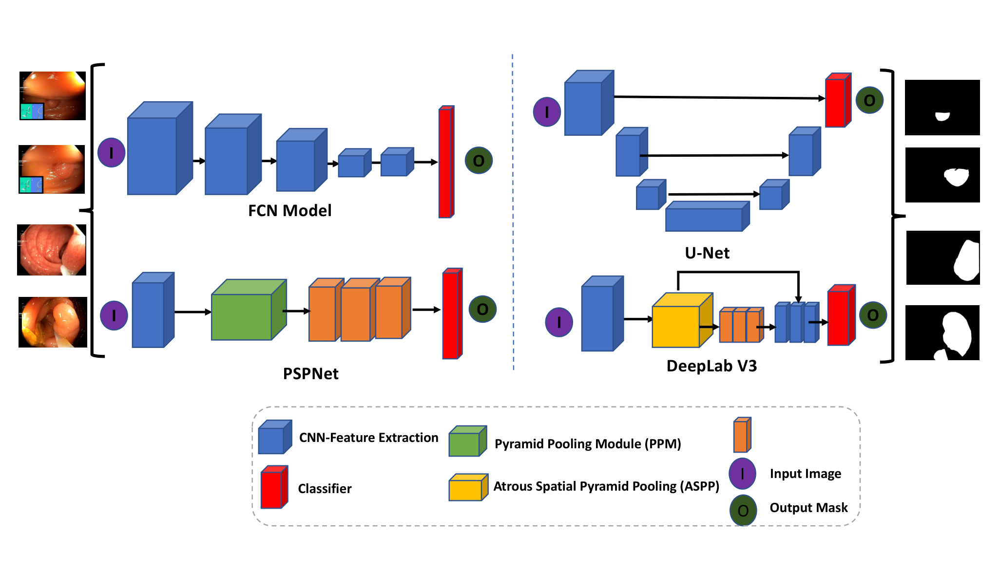
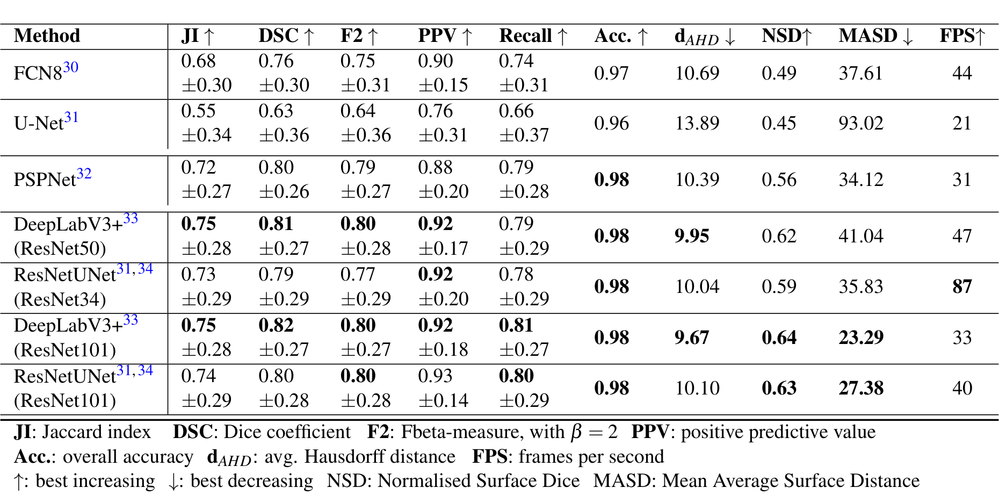
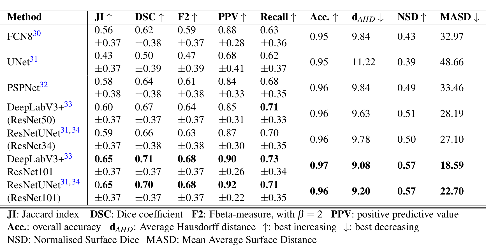
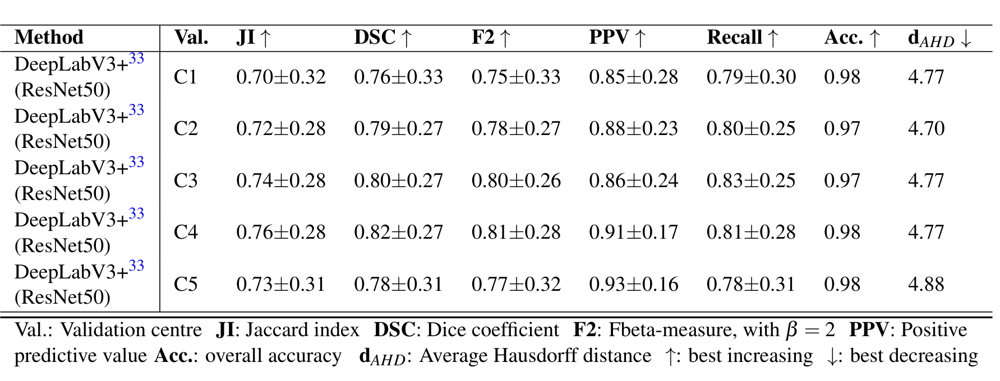

图文解读
1背景与动机
息肉漏检率高，而自动分割模型一换医院就掉分。 论文引用的荟萃分析显示，腺瘤漏检率 26%，锯齿状息肉 27%。约 90% 的结直肠癌由这类良性前驱病变转化而来，及早发现并完整切除几乎可以消除死亡风险。
深度学习分割模型在同一中心内表现不错，但遇到域偏移较大的外部数据时性能明显下降。域偏移指训练和测试图像来自不同医院、人群或设备，统计特性不同。
作者认为多数工作不做多中心评测，原因是缺少公开的多中心、带像素级标注的数据。已有数据集要么只有一两个中心，要么需要申请且已不可获取，要么没有掩码。

PolypGen 是表中唯一同时满足多中心、带掩码、含序列且开放获取的一项。接下来看它的答案长什么样。
2核心观点速览
这是一份数据发布说明，分割基线只是证明数据能测出泛化差距。
- 数据：六个中心、300 多名患者；阳性 3762 帧（单帧 1537、序列 2225），阴性 4275 帧。
- 标注：三名研究者勾画，资深消化科医生二值审核；首轮 2213 个标注拒收 676 个（30.5%）。
- 验证：C1 到 C5 训练、C6 测试；
DeepLabV3+（ResNet101）单帧DSC0.82、序列 0.71、小息肉 0.46。 - 边界：只有一种划分，没有域内上界，没有检测基线，标注一致性论文未说明。
先看这六个中心的数据到底差在哪里。
3六个中心与两类样本
多中心的价值取决于中心之间的真实差异。 六家医院分别在法国、意大利（两家）、挪威、英国和埃及，每家至少提供 50 名患者的数据。内镜系统全部是 Olympus，只是型号不同，所以设备差异限于同一厂商内部。
阳性样本来自确诊有息肉的患者视频，阴性样本只取无息肉的正常黏膜视频。
| 部分 | 帧数 | 说明 |
|---|---|---|
| 阳性单帧 | 1537 | C1 到 C5 共 1449 张，C6 88 张 |
| 阳性序列 | 2225 | 23 条序列，主要来自 C2（865）、C4（450）、C6（432） |
| 阴性序列 | 4275 | 23 条序列，只有原图 |

图与正文对不上。 正文写 C5 为 458 帧、C6 为 520 帧，图中却标 C5 520、C6 484，论文未解释。阴性环有一段 1755 用的是 C6 的颜色却标为 C5，阴性帧来自哪四家医院论文未说明。
数据量交代清楚后，关键是标签可不可信。
4标注怎么做、被拒了多少
这篇论文少见地报告了拒收率。 三名研究者在 Labelbox 上平均分工勾画，医生团队复查，中心专家核对边界，再由其他中心的资深医生做二值审核，即只判接受或拒绝。
勾画规则按情形写明：凸起息肉只画隆起区，染色息肉只画未染色部分，器械遮挡处不画，远处看不清的息肉不画，已癌变但不呈息肉外观的黏膜不画。

不计模糊批次，首轮 2213 个标注中 676 个被拒，拒收率 30.5%。模糊批次重标后第二轮仍拒 34.17%。三成被拒说明息肉边界本身难以达成一致，但标注者间一致性论文未说明，被拒帧是否修正后发布也论文未说明。
有了数据和标签，作者用什么协议证明它能测出泛化？
5技术验证协议
设计很简单：五个欧洲中心训练，埃及中心测试。 C1 到 C5 的 1449 张单帧按 80/20 分成训练和验证，在 C6 的 88 张单帧和 432 张序列帧上测试。C6 的人群和内镜型号都不同于训练中心。
训练设置：约 500 轮，批大小 16，输入 512×512，Adam，学习率 0.01，权重衰减 0.00001，缩放、随机裁剪和水平翻转增广。

指标除了 DSC（预测与真值掩码的重叠，即 F1）和 JI（交并比），还有边界类的平均豪斯多夫距离、平均表面距离 MASD 和归一化表面重叠 NSD。NSD 统计离真值边界不超过阈值的预测边界比例，论文把阈值设为 10，单位论文未说明。
协议有一处明显缺口：没有在 C6 内部训练的上界。所以下面的数字只能说明 C6 有多难，不能说明域偏移让模型掉了多少。
6结果说了什么
最好的网络在单帧上 DSC 0.82，换成序列就降到 0.71。
| 方法 | 单帧 DSC | 序列 DSC | 单帧 MASD ↓ | 帧率 |
|---|---|---|---|---|
U-Net | 0.63 | 0.50 | 93.02 | 21 |
FCN8 | 0.76 | 0.62 | 37.61 | 44 |
PSPNet | 0.80 | 0.64 | 34.12 | 31 |
DeepLabV3+（ResNet50） | 0.81 | 0.67 | 41.04 | 47 |
ResNetUNet（ResNet34） | 0.79 | 0.66 | 35.83 | 87 |
DeepLabV3+（ResNet101） | 0.82 | 0.71 | 23.29 | 33 |
ResNetUNet（ResNet101） | 0.80 | 0.70 | 27.38 | 40 |


带残差骨干和空洞空间金字塔池化的模型在两种数据上都领先，U-Net 两次垫底。ResNetUNet（ResNet34）每秒 87 帧，DSC 只比最好的低一点，是实时场景的折中选择。
正文有一处笔误。 验证总结段说序列最高 DSC 为 0.65，但表 6 中 0.65 是 JI，DSC 是 0.71。
整体数字之外，按尺寸和验证中心拆开看更能说明问题。
7小息肉与验证中心
小息肉几乎是失败点。 DeepLabV3+（ResNet101）在大息肉上 DSC 0.87、中息肉 0.84，小息肉只有 0.46。小息肉指外接框不超过 100×100 像素，与毫米没有固定换算。其余模型的分层数值论文未给出完整表。
表 7 每次用四个中心训练、一个中心验证，DeepLabV3+（ResNet50）的 DSC 在 0.76 到 0.82 之间。作者据此说验证集选择影响很大。

但每种设置只训练一次，这个差距是否超出随机波动论文未说明。表 7 的平均豪斯多夫距离在 4.70 到 4.88 之间，而表 5 同一模型在 C6 上是 9.95，表 7 到底在哪个数据上计算论文未说明。
8结果没说什么
这些数字证明了 C6 难，没证明难在域偏移。 下面三点是证据链的缺口：
- 没有域内上界。 没有 C6 内部训练的分数，无法把下降归因于跨中心。
- 序列分数混了两种错误。 序列里有无息肉帧，误报和分割误差都会拉低
DSC，论文没有分开报告。Fig. 9 的讨论也提到序列中得分高的多为无息肉帧。 - 没有方差。 表中 ± 的含义论文未说明，多次训练的方差也没有，0.01 到 0.02 的模型差距无法判断是否稳定。
此外，标题强调检测，但技术验证只有分割；检测基线论文未说明。
9复用前要检查什么
- 下载后先统计各中心帧数，对照正文和 Fig. 2a，确认 C5 和 C6 的实际数字。
- 做泛化实验至少报告域内留出、留一中心和小息肉分层三种结果。
- 序列评测把有息肉帧的
DSC和无息肉帧的误报率分开算，阴性序列正好用来测误报。 - 六个中心都是
Olympus，不能据此推断对其他厂商设备的泛化。